대표 공개 실행 유지 11
공식 원문이 실행 순서를 지지하고 개인 결과를 조회·상담에 남기는 route입니다.
- 전기차 보조금, 영유아 검진, 국가장학금, 지방세, 안심상속
- 실업급여, 전세보증, 국민취업지원, 소상공인 정책자금
- 중고차 이전등록, 성인 예방접종 이력·상담
남아 있던 14개 source review route를 현재 공식 원문, 콘텐츠 범위, 공개 게이트, 모바일·wide 화면으로 다시 판정했습니다. 링크 생존과 공개 승인은 별도 기준입니다.
공식 원문이 실행 순서를 지지하고 개인 결과를 조회·상담에 남기는 route입니다.
출처는 살아 있지만 범위나 조언 경계가 대표 공개 기준에 미달합니다.
| Route | 이전 문제 | 현재 기준 | 상태 |
|---|---|---|---|
ev-subsidy-apply | 계약 전 지원확인서가 필수라는 잘못된 순서 | 계약 → 판매점 신청 → 선정 → 출고·등록 → 지급신청 | 공개 |
adult-vaccine-schedule-check | 연령별 접종·무료지원 판정 | 이력 조회 → 누락 문의 → 의료진 상담 → 기록 | 공개 |
used-car-ownership-transfer | 낡은 정부24 URL과 처리기간 단정 | 자동차365·법령, 15일 기한, 처리시간 비고정 | 공개 |
small-business-fund-check | 고정 인원수·교육 요건 | 현재 공고의 대상·제외업종·대출방식·자료 | 공개 |
property-local-tax-pay | 연납·절세까지 broad하게 확장 | 현재 부과내역 조회·납부·영수증 | 공개 |
housing-subscription-account | 고정 가점과 여러 공급유형 혼합 | 관심 공고 하나의 자격·일정 확인, 추후 분리 | 검토 전용 |
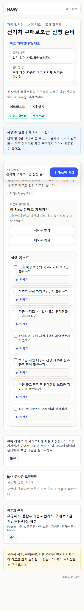
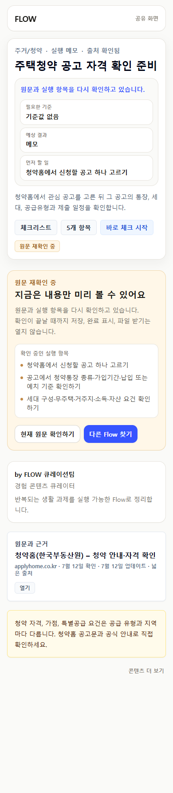
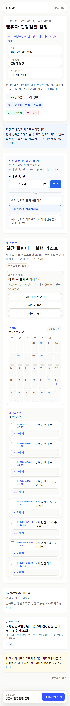
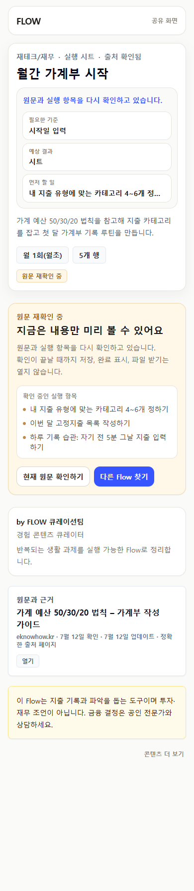
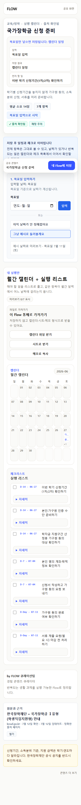
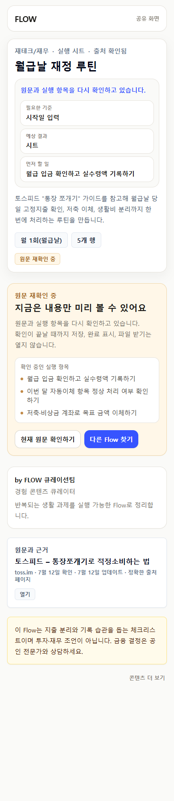
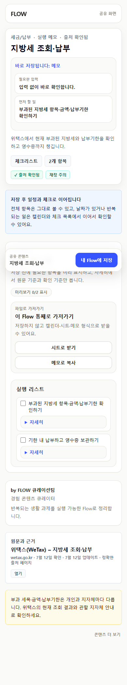
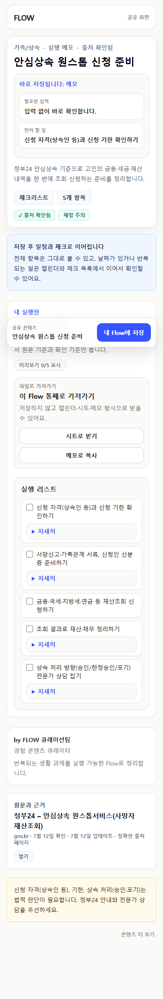
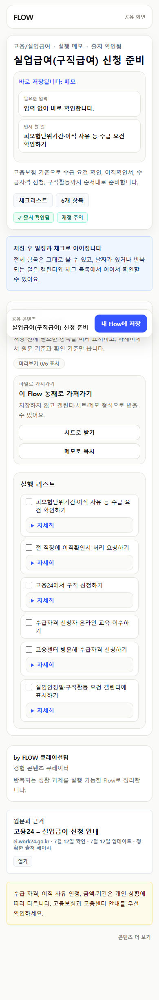
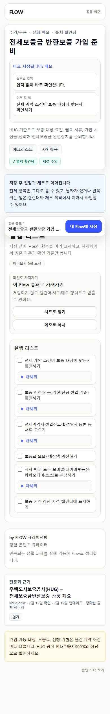
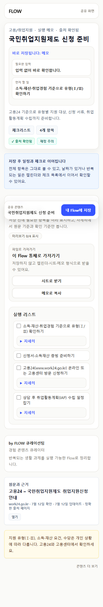
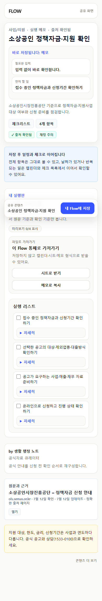
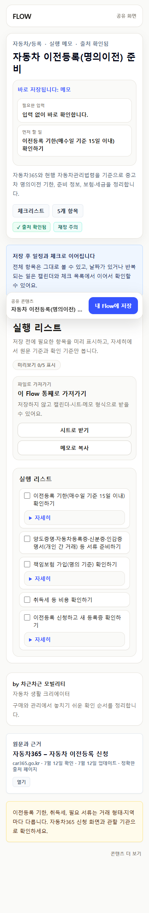
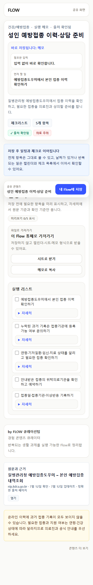
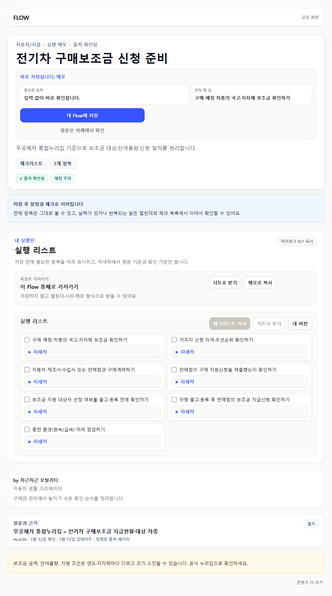
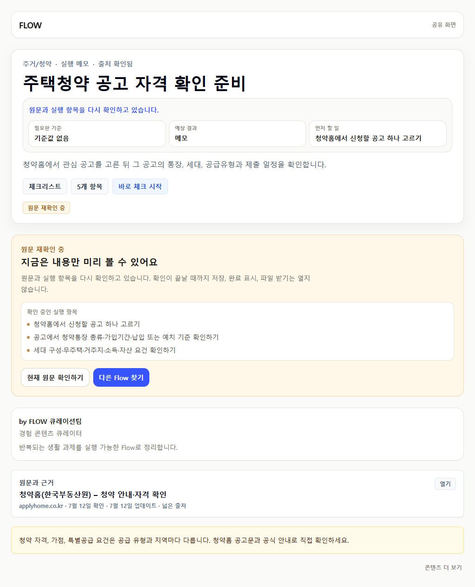
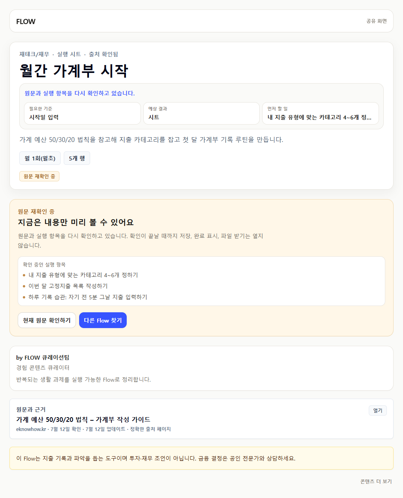
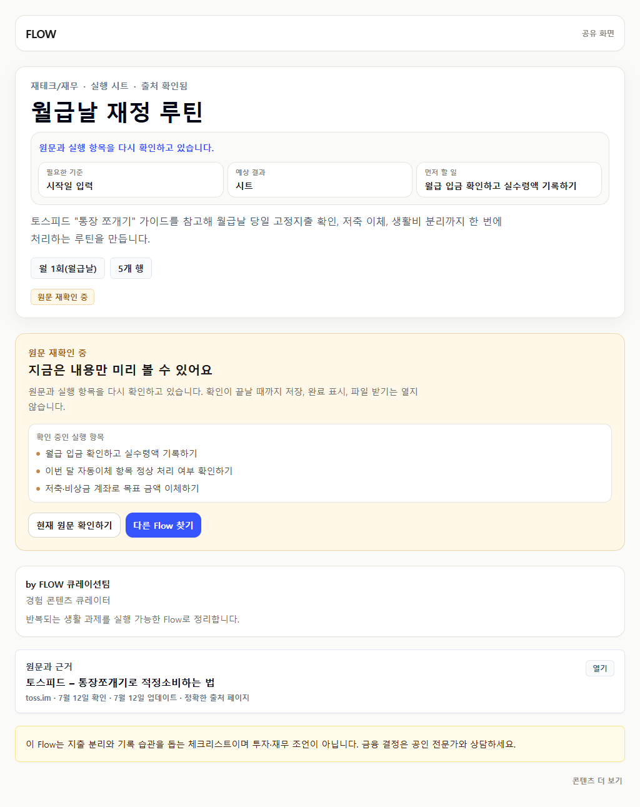
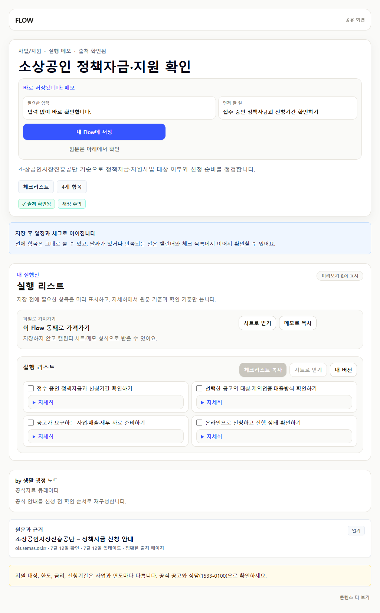
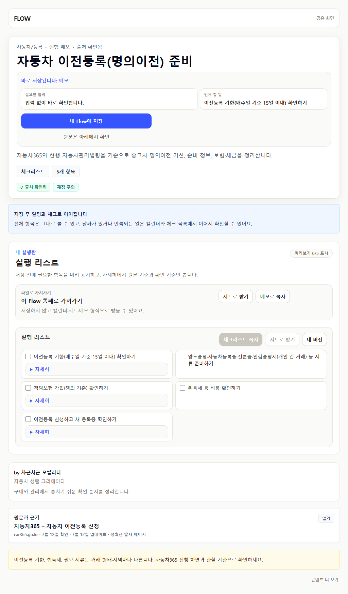
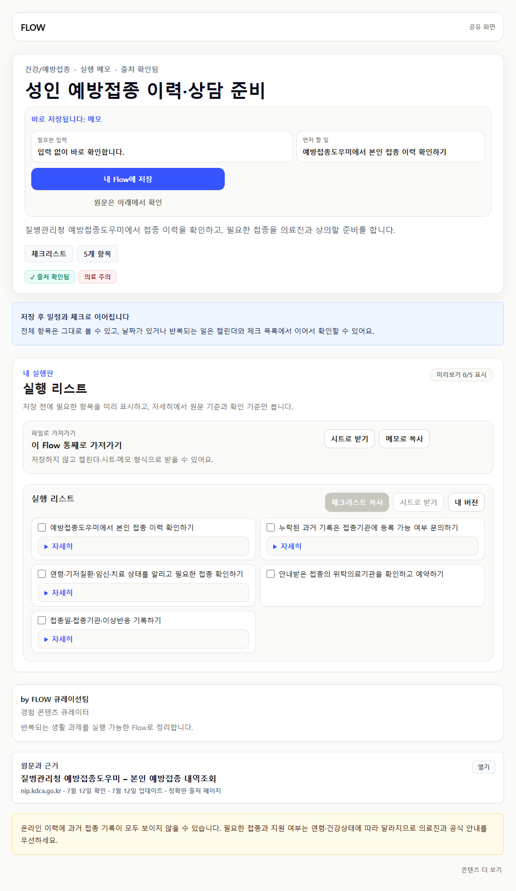
source review queue 0은 모든 콘텐츠의 공개 승인을 뜻하지 않습니다. 3개 route는 감사 결과에 따라 계속 제한되며, 540개 review-only Flow의 장기 축소·통합은 별도 포트폴리오 과제입니다.